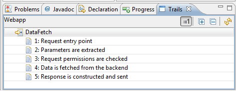
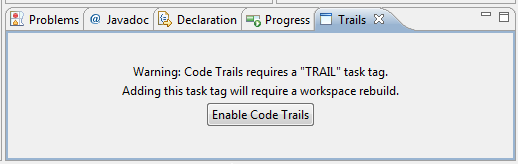

The Problem
When working with a new software codebase it can be very tricky and time consuming to become familiar with the
flow of control through the various subcomponents and how this relates to high level operations. Design documents
can provide high level overviews of how the code fits together but are likely to become out of date as they are usually
stored in separate documents that developers must remember to update at the same time as making code changes. Javadoc
provides per method, class, package level comments that can provide a lot of low level detail about the code but in a
way which fails to highlight the important paths through the code.
In other words it can be hard to see the wood for the trees.
The Solution
Code Trails is my attempt to address this problem. Code Trails are made from annotations that are maintained within
source code that allow IDE tools to identify key locations within the source code that are part of a Trail and
present the relevant code to developers in an intuitive and efficient manner.
They work as follows.
- Text is added to code comments with the following syntax.
- TRAIL [TAG:2] Single line description – where “TAG” identifies the trail and “:2” is an
optional number indicating the position of the marker within the Trail
- Lengthy description on the following lines (optional)
- The IDE scans source code for these special code comments.
- The IDE includes a Trails view which displays the list of Trails for the current project.
- Each Trail is identified by its TAG
- Each Trail can be expanded within the view to display a list of the “Single line descriptions”
- These “Single line descriptions” are ordered according to the optional number following the tag (if present)
- Double clicking a “Single line descriptions” loads the source file which it came from into the
IDE and highlights the correct line of the source code where the developer can read the optional lengthy
description in place and/or examine the code around the marker.
- The IDE includes support for efficiently working with markers e.g.
- Renumbering markers - From the Trail view a marker can be right clicked and a context menu allows
the optional number to be incremental/decremented. This can be sped up by using keyboard shortcuts - alt+up and alt+down.
- Renaming tags - All the files which contain tags for a particular trail can be edited in a single
operation to modify the tag value. This can be done in the Trail view by right clicking the trail or by
pressing F2 with the trail selected.
The intention of this solution is that each Trail would include a relatively small number of markers (e.g. 10+ not 50+)
which together show the key source code locations involved in a high level operation.
For example a “DataRequest” trail might include the following markers:
- Request entry point
- Parameters are extracted
- Request permissions are checked
- Data is fetched from the backend
- Response is constructed and sent

There is no separate metadata/documents to be maintained which makes it more likely that trails will be kept up
to date. When a developer is working with source code outside of a Code Trails enabled IDE they can still grep
the source code for [TAG to find markers manually.
Installation
An Eclipse implementation of Code Trails can be installed from the following update site: http://mchr3k-eclipse.appspot.com/
When you first open the Trails view you will see the following warning. Clicking the button will prompt a workspace
rebuild to enable detection of TRAIL task tags.

References
There are some comparisons which can be made between Code Trails and the approach known as
Literate Programming by Donald Knuth. LP refers to
the practice of writing progam documentation in a form which can then be compiled into code. At the other end
of the spectrum is Reverse LP which refers to writing program code in a form which can be compiled into documentation
e.g. Javadoc.
Code Trails is closer to the Reverse LP end of the spectrum but it is designed to allow the user to expose the
important design details rather than focusing on the details of each and every method signature.